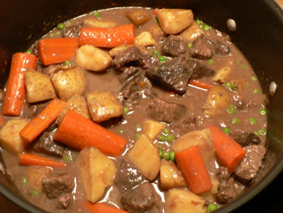

Hearty Beef Stew
I learned an important lesson tonight: It’s okay to follow simple recipes from Cook’s Illustrated without trying to get fancy, as I am frequently tempted to do. Last night I made the Hearty Beef Stew from their Cover & Bake collection of recipes. There is nothing complicated or fussy about it—it is pure comfort food.

Hearty Beef Stew
- 3 pounds chuck roast cut into 1.5-inch cubes (I used FreshDirect’s economical beef stew meat, despite my various protests about packaged food. At least this came from a real butcher.)
- Vegetable oil, for sautéing
- 2 onions, chopped coarsely
- 3 garlic cloves, minced or chopped
- 3 tablespoons all-purpose flour
- 1 cup red wine
- 2 cups chicken, beef, or veal stock/broth (I used some frozen homemade veal stock)
- 2 bay leaves
- 1 teaspoon dried thyme
- 1 pound potatoes (I used Yukon Gold), cut into one-inch cubes
- 4 carrots, sliced however you like
- 1 cup frozen peas
- Parsley
- Preheat the oven to 300ºF. Dry the meat with paper towels and season with salt and pepper. Heat one tablespoon of oil over medium-high heat in an an eight-quart ovenproof pot, and brown the meat in two batches on all sides. Make sure it is well browned. Reserve the meat in a bowl.
- Reduce the heat to medium, add a tablespoon of oil, and brown the onions with 1/4 teaspoon salt. Stir vigorously, scraping the pot with a wooden spoon.
- Once the onions are soft, add the garlic and cook for 30 seconds. Stir in the flour, and cook it for about 2 minutes.
- Add the wine and continue to scrape the pot. Add the broth gradually, then add the bay and thyme. Add the meat and, once the mixture has returned to a simmer, cover the pot, and put it in the preheated oven for one hour.
- After an hour, add the potatoes and carrots. Return the pot to the oven, and cook for another hour. (Note: You can stop at this point, as I did, if you aren’t going to eat your stew today. Cool the pot at room temperature, cover tightly, and keep it in the fridge for a day or two. They say this improves a stew’s flavor.)
- After the second hour in the oven, add the peas, cover, and let stand for 5 minutes. (If you’re reheating, the pot will need about 30 minutes on the stove to soften up again). Discard the bay leaves, stir in the parsley, and serve.
Comments
You should have made an Irish stew! It’s important to create rituals and traditions in life and food traditions are one way to do that.
Yummy, yummy in my tummy!
I don’t know how to make an Irish stew, and I don’t get into the whole Saint Patrick thing. But you do have a point about food traditions.
It does have potatoes in it. And green peas!
Don’t be petulant, Leland! Your stew looks and sounds delicious and I didn’t mean to be critical. OTOH, you didn’t know how to make this stew until you read a recipe so not knowing how to make Irish stew isn’t really an excuse for not making it. I don’t make it because I don’t like it; I only like lamb when it’s garlicky and grilled and medium rare, not all gray and stewed with too many potatoes and a floury gravy. Poppy loves it, though, and used to consider it one of his specialities when he did the cooking before he had a day job. Thank goodness I don’t have to eat it anymore. That’s the point about food traditions, though, create your own, but do have them because they help to anchor our lives.
Wow, that stew looks amazing!
Why did I not know you had a food blog? Also, I haven’t seen you in ages, and that’s not a good thing. I think the e-mail address you have for me is one I abandoned, so please change it to glendaglamazon@yahoo.com.
I hope you all are doing well and I hope to see you sometime soon!
Add a comment